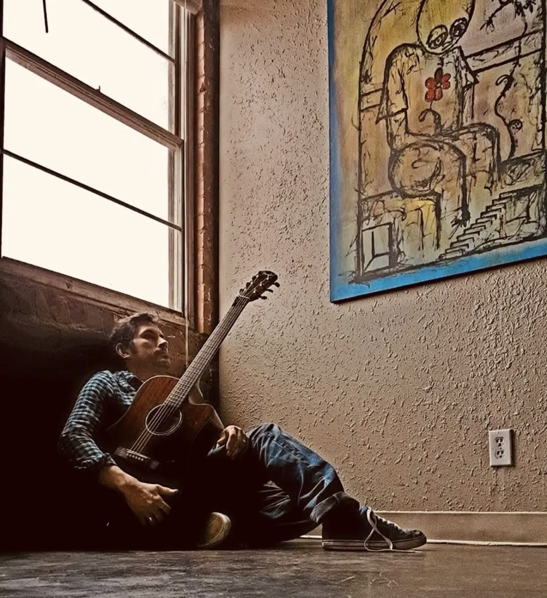

Anthony Fuentes

I find comfort getting lost within a blank canvas. Until the first paint is applied, I am captive to my most vulnerable feelings. I know what needs to be painted but I also know that any beginning intuition or idea will be suffocated by overwhelming thoughts. For me, allowing the unknown to become present is the first step in my creative journey. – A.F. Anthony Fuentez grew up overseas and moved to the States at the age of eleven where he now lives and works in Abilene, Texas. The allure of storytelling began at a young age. As a child his interest in fables primed his future artistic endeavors and inspired his interest in painting. While attending the University of New Mexico, Albuquerque he understood his calling to Art. “Emotions are very diverse in expression and I want to tell a story through painting where the viewer can relate and recall a similar experience.” In his spare time when Fuentez is not drawn inside his studio, he finds his motivation through writing poetry. His latest body of work, A Reflection of Who I Have Become, conveys his feelings through a poetic narrative. His work has been represented in New York, Ohio, New Mexico and Los Angeles galleries as well as public and private collections both domestic and international.